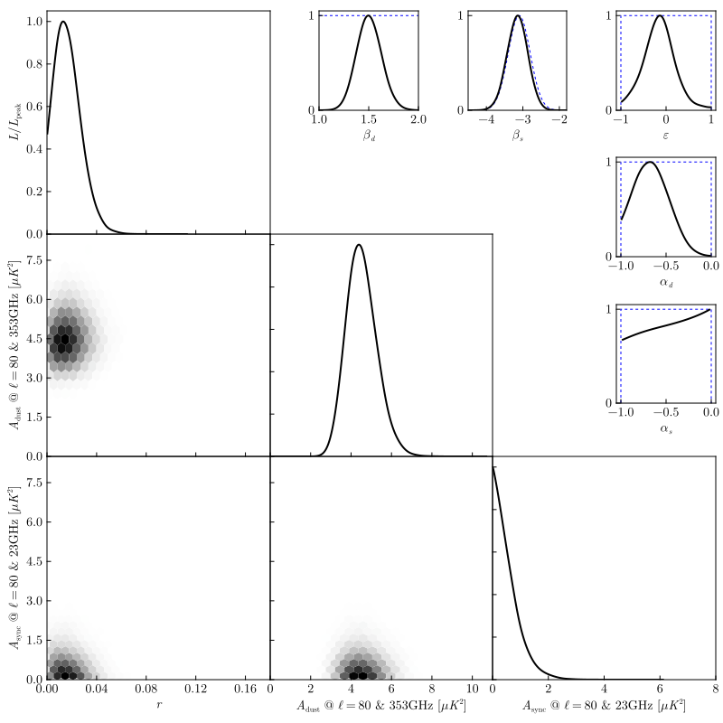

CosmoMC Weighted Chains (BK18 baseline likelihood analysis)
The figure below is to be compared to Figure 4 from BICEP/Keck paper XIII.
After loading the appropriate columns from the set of MCMC chains and thinning, performing the kernel density estimation is as simple as:
K_r = kde(chain_r; weights = chain_weight, lo = 0.0, boundary = :closedleft)
K_Ad = kde(chain_Ad; weights = chain_weight, lo = 0.0, boundary = :closedleft)
K_As = kde(chain_As; weights = chain_weight, lo = 0.0, boundary = :closedleft)
K_βd = kde(chain_βd; weights = chain_weight, lo = 0.8, hi = 2.4)
K_βs = kde(chain_βs; weights = chain_weight, lo = -4.5, hi = -2.0)
K_αd = kde(chain_αd; weights = chain_weight, lo = -1.0, hi = 0.0, boundary = :closed)
K_αs = kde(chain_αs; weights = chain_weight, lo = -1.0, hi = 0.0, boundary = :closed)
K_ε = kde(chain_ε; weights = chain_weight, lo = -1.0, hi = 1.0, boundary = :closed)
Note that because this package does not support constructing 2D density estimates, the 68% and 95% confidence "ellipses" in the lower-left triangle of the plot has been replaced with simple 2D histograms. The hex bin sizes have been chosen using 2× the automatically-determined bandwidths of the corresponding 1D curves.
Source Code
using CSV
import KernelDensityEstimation as KDE
using .KDE
# !!!!!!!!!!
# !! NOTE !!
# !!!!!!!!!!
#
# These files must be downloaded manually and the correct folder extracted from
# http://bicepkeck.org/BK18_datarelease/chains.tgz
#
# Be warned that this file is approximately 63GiB, though we use only the smaller of the
# two datasets which expands to about 4.7GiB.
srcdir = joinpath(@__DIR__, "BK18_04_BK18lf_freebdust")
filebase = joinpath(srcdir, "BK18_BK18lf_freebdust")
# interpret the parameters file; first column are column names of the chain file, and
# the second column gives corresponding LaTeX pretty names
paramnames = CSV.read(filebase * ".paramnames", CSV.Tables.matrix; delim = '\t', header = false)
# load the chains
# keep only the MCMC parameters, not all of the derived parameters (adding the two
# implicit columns for weights and neg-loglike)
nkeep = 2 + findlast(!endswith("*"), paramnames[:, 1])
chains = mapreduce(vcat, 1:16) do num
CSV.read(filebase * "_$num.txt", CSV.Tables.matrix;
header = false, delim=' ', ignorerepeated = true,
select = 1:nkeep)
end
# use the parameter names file to find the correct column in the chains matrix
paramidx(name) = findfirst(==(name), @view paramnames[:, 1])
thinning = 50 # empirically chosen based on examining plot,
# lines(autocor(params[:, paramidx("r")]))
# get weights and the parameters portion of the matrix
chain_weight = @view chains[1:thinning:end, 1];
params = @view chains[1:thinning:end, 3:end];
# then extract vectors for each of the parameters we'll plot
chain_r = @view params[:, paramidx("r")];
chain_Ad = @view params[:, paramidx("BBdust")];
chain_As = @view params[:, paramidx("BBsync")];
chain_βd = @view params[:, paramidx("BBbetadust")];
chain_βs = @view params[:, paramidx("BBbetasync")];
chain_αd = @view params[:, paramidx("BBalphadust")];
chain_αs = @view params[:, paramidx("BBalphasync")];
chain_ε = @view params[:, paramidx("BBdustsynccorr")];
# run kernel density estimation on each chain
# N.B. the parameter limits in the `filebase * ".ranges"` was examined to determine lo/hi
K_r = kde(chain_r; weights = chain_weight, lo = 0.0, boundary = :closedleft)
K_Ad = kde(chain_Ad; weights = chain_weight, lo = 0.0, boundary = :closedleft)
K_As = kde(chain_As; weights = chain_weight, lo = 0.0, boundary = :closedleft)
K_βd = kde(chain_βd; weights = chain_weight, lo = 0.8, hi = 2.4)
K_βs = kde(chain_βs; weights = chain_weight, lo = -4.5, hi = -2.0)
K_αd = kde(chain_αd; weights = chain_weight, lo = -1.0, hi = 0.0, boundary = :closed)
K_αs = kde(chain_αs; weights = chain_weight, lo = -1.0, hi = 0.0, boundary = :closed)
K_ε = kde(chain_ε; weights = chain_weight, lo = -1.0, hi = 1.0, boundary = :closed)
# !!!!!!!!!!
# !! NOTE !!
# !!!!!!!!!!
#
# Below is just plotting. Nothing interesting about KDEs...
using CairoMakie
Base.isinteractive() && using GLMakie
update_theme!(
Axis = (
xgridvisible = false,
ygridvisible = false,
xtickalign = 1,
ytickalign = 1,
),
fontsize = 14,
theme_latexfonts()
)
fig = Figure(size = (800, 800))
fig.layout.alignmode = Outside(8) # shrink exterior padding
# use two separate sub-grids
# 1. Large Panel grid for the primary parameters (lower triangle of 1D and 2D likelihoods)
fig.layout[1:3, 1:3] = large_grid = GridLayout()
# 2. Small Panel grid to show secondary "nuisance" parameters, reusing just the extra
# space in the upper-right of the large grid
fig.layout[1:2, 2:3] = small_grid = GridLayout(alignmode = Outside(18, 0, 18, 0))
# use square panels in the top-level fig layout so that the large panel axes can be
# brought into direct contact with one another (once appropriate decorations are hidden)
for ii in 1:3
rowsize!(fig.layout, ii, Aspect(1, 1))
end
kws_like = (; linewidth = 2, color = :black)
kws_prior = (; linewidth = 1, linestyle = :dash, color = :blue)
dust_label = L"$A_\mathrm{dust}$ @ $\ell=80$ & 353GHz [$\mu K^2$]"
sync_label = L"$A_\mathrm{sync}$ @ $\ell=80$ & 23GHz [$\mu K^2$]"
peaknorm(K::KDE.UnivariateKDE) = KDE.UnivariateKDE(K.x, K.f ./ maximum(K.f))
#############
# large grid
# main diagonal of 1D marginalized posteriors
ax_r = let ax = Axis(large_grid[1, 1], aspect = 1)
lines!(ax, peaknorm(K_r); kws_like...)
hidexdecorations!(ax, ticks = false)
ax.ylabel = L"L / L_\mathrm{peak}"
xlims!(ax, 0, 0.18)
ylims!(ax, 0, nothing)
ax.xticks = 0:0.04:0.16
ax.yticks = 0:0.2:1
ax
end
ax_Ad = let ax = Axis(large_grid[2, 2])
lines!(ax, peaknorm(K_Ad); kws_like...)
hidexdecorations!(ax, ticks = false)
hideydecorations!(ax, ticks = false)
xlims!(ax, 0, 11)
ylims!(ax, 0, nothing)
ax.xticks = 0:2:10
ax.yticks = 0:0.2:1
ax
end
ax_As = let ax = Axis(large_grid[3, 3])
lines!(ax, peaknorm(K_As); kws_like...)
hideydecorations!(ax, ticks = false)
xlims!(ax, 0, 8)
ylims!(ax, 0, nothing)
ax.xticks = 0:2:8
ax.yticks = 0:0.2:1
ax.xlabel = sync_label
ax
end
# lower triangle of parameter correlations
ax_r_Ad = let ax = Axis(large_grid[2, 1])
# KDE defaults to bwratio = 8, so factor of 16 × Δx is just 2 × bandwidth
cellsize = 16 .* (step(K_r.x), step(K_Ad.x))
hexbin!(ax, chain_r, chain_Ad; weights, cellsize, colormap = Reverse(:greys))
hidexdecorations!(ax, ticks = false)
ax.ylabel = dust_label
xlims!(ax, 0, 0.18)
ylims!(ax, 0, 8.5)
ax.xticks = 0:0.04:0.16
ax.yticks = 0:1.5:7.5
ax
end
ax_r_As = let ax = Axis(large_grid[3, 1])
# KDE defaults to bwratio = 8, so factor of 16 × Δx is just 2 × bandwidth
cellsize = 16 .* (step(K_r.x), step(K_As.x))
hexbin!(ax, chain_r, chain_As; weights, cellsize, colormap = Reverse(:greys))
ax.xlabel = L"r"
ax.ylabel = sync_label
xlims!(ax, 0, 0.18)
ylims!(ax, 0, 8.5)
ax.xticks = 0:0.04:0.16
ax.yticks = 0:1.5:7.5
ax
end
ax_Ad_As = let ax = Axis(large_grid[3, 2])
# KDE defaults to bwratio = 8, so factor of 16 × Δx is just 2 × bandwidth
cellsize = 16 .* (step(K_Ad.x), step(K_As.x))
hexbin!(ax, chain_Ad, chain_As; weights, cellsize, colormap = Reverse(:greys))
hideydecorations!(ax, ticks = false)
ax.xlabel = dust_label
xlims!(ax, 0, 11)
ylims!(ax, 0, 8.5)
ax.xticks = 0:2:10
ax.yticks = 0:1.5:7.5
ax
end
# close the gaps in the grid
rowgap!(large_grid, Fixed(0.0))
colgap!(large_grid, Fixed(0.0))
#############
# small grid
ax_βd = let ax = Axis(small_grid[1, 1], aspect = 1)
# prior
lines!(ax, [0.8, 0.8, 2.4, 2.4], [0, 1, 1, 0]; kws_prior...)
# posterior curve
lines!(ax, peaknorm(K_βd); kws_like...)
xlims!(ax, 1, 2)
ylims!(ax, 0, nothing)
ax.xlabel = L"\beta_d"
ax.yticks = 0:1
ax
end
ax_βs = let ax = Axis(small_grid[1, 2], aspect = 1)
# prior
let μ = -3.1, σ = 0.3
lines!(ax, -4.5:0.01:-1.8, x -> exp(-(x - μ)^2 / (2σ^2)); kws_prior...)
end
# posterior curve
lines!(ax, peaknorm(K_βs); kws_like...)
xlims!(ax, -4.5, -1.8)
ylims!(ax, 0, nothing)
ax.xlabel = L"\beta_s"
ax.xticks = -4:-2
ax.yticks = 0:1
ax
end
ax_ε = let ax = Axis(small_grid[1, 3], aspect = 1)
# prior
lines!(ax, [-1, -1, 1, 1], [0, 1, 1, 0]; kws_prior...)
# posterior curve
lines!(ax, peaknorm(K_ε); kws_like...)
ylims!(ax, 0, nothing)
ax.xlabel = L"\varepsilon"
ax.xticks = -1:1
ax.yticks = 0:1
ax
end
ax_αd = let ax = Axis(small_grid[2, 3], aspect = 1)
# prior
lines!(ax, [-1, -1, 0, 0], [0, 1, 1, 0]; kws_prior...)
# posterior curve
lines!(ax, peaknorm(K_αd); kws_like...)
ylims!(ax, 0, nothing)
ax.xlabel = L"\alpha_d"
ax.yticks = 0:1
ax
end
ax_αs = let ax = Axis(small_grid[3, 3], aspect = 1)
# prior
lines!(ax, [-1, -1, 0, 0], [0, 1, 1, 0]; kws_prior...)
# posterior curve
lines!(ax, peaknorm(K_αs); kws_like...)
ylims!(ax, 0, nothing)
ax.xlabel = L"\alpha_s"
ax.yticks = 0:1
ax
end
# adjust the small grid to also have square panels
for ii in 1:3
colsize!(small_grid, ii, Aspect(2, 1))
end
# grow the column spacing to better match the vertical spacing (which includes labels)
colgap!(small_grid, Fixed(44))
# then keep the small grid top-right aligned w.r.t. the main figure grid, since the
# forced aspect ratios require some padding be added somewhere
small_grid.valign = :top
small_grid.halign = :right
save("index.svg", fig, backend = CairoMakie)